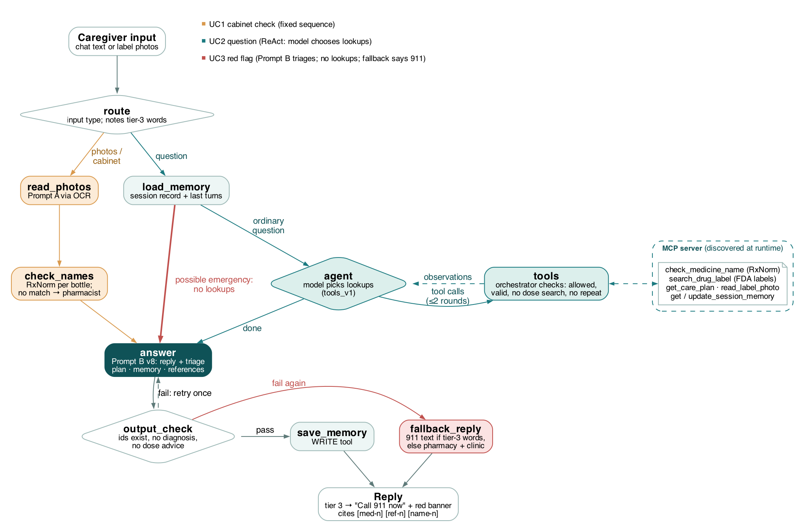

docs/workflow/README.md. Underlined results link to the exact file.Maria cares for her mother Rosa after a heart-failure discharge. Every message she sends goes through one LangGraph pipeline (Figure 1). The model decides what to look up and how urgent the message is; fixed rules check everything it does. Prompt A (A2) reads label photos; Prompt B v8 (A3, unchanged) writes every reply.

app/graph.py. Colors mark the three use cases.| Use case | Path | Pattern |
|---|---|---|
| UC1 Cabinet check | photos → Prompt A (OCR) → RxNorm name check per bottle → Prompt B compares bottles with the plan | Plan-then-execute: the steps never change |
| UC2 Question | memory → the model chooses lookups ⇄ the orchestrator runs them (at most 2 rounds) → Prompt B answers | ReAct: the steps depend on the question |
| UC3 Red flag | Prompt B sets the tier; tier 3 opens "Call 911 now" (red banner); emergency words skip lookups | Model triage, with a fixed fallback |
Every path ends the same way: an output check (ids exist, no diagnosis, no dose advice) → one retry with the failures → a safe fallback reply (the fixed 911 text if emergency words were seen) → save memory.
Action vs response. A tool-choice prompt (tools v1) lets the model propose lookups, and the orchestrator decides whether they run (Module 8's hybrid invocation). It allows only listed tools with valid JSON, refuses repeats, and never runs a label search on a dose question. The model asked for one on a dose or stop question 4 times, and all 4 were blocked. Errors go back to the model as observations, never as crashes.
| Tool (served over MCP) | What it does | Guard |
|---|---|---|
check_medicine_name |
RxNorm lookup for any name not in the plan | no match → "ask the pharmacist", never a guess |
search_drug_label |
FDA label passages (A3 retrieval: hybrid search, reranked, top 5) | unknown names get no passages |
get_care_plan, read_label_photo |
plan items; Prompt A on a label photo | id and path checks |
get_session_memory, update_session_memory |
the A3 session record; the write tool | write is orchestrator-only |
MCP. The six tools run on a real MCP server (app/mcp_server.py, MCP Python SDK 2.3,
HTTP). The agent discovers them at runtime and calls them by name, so a tool can change without touching the agent.
app/test_mcp.py runs a cabinet check and a follow-up over the server.
Context flow. Each source fills its own slot in Prompt B: the care plan → {{care_plan}}; the session record and
last turns → {{memory}}; label passages and name checks from tools → {{references}} (cited as [ref-n],
[name-n]); this session's cabinet flags → {{cabinet_diff}}. The pipeline asserts the references reached the prompt.
| LangGraph (chosen) | n8n | Plain Python loop | |
|---|---|---|---|
| Branching and loops | graph edges; the graph is the diagram | visual nodes | hand-written |
| Reuse our Python checks and retrieval | direct | wrap each one | direct |
| MCP | official SDK | MCP Client Tool / Server Trigger nodes [6] | official SDK |
| Batch-test hundreds of inputs | one function, run_turn() |
its own runner | yes |
| License | MIT | Sustainable Use License: free to self-host, not OSI open source [7] | n/a |
We chose LangGraph because our safety checks and retrieval already exist as Python and must be scored by the same tests as A2 and A3. n8n would be easier for non-programmers to edit, but every check would need rewriting.
Final code, deepseek-flash, one run per set; two of the four sets were written by fresh agents that never saw the
code. "v8 alone" is the A3 single prompt, which is also the no-tools ablation: without tools the pipeline sends it the
identical prompt.
| Set (inputs) | v8 alone | Pipeline |
|---|---|---|
| Main cases (57) | 56 | 56 |
| Confirm (54) | 51 | 52 |
| A4 held-out, fresh agent (59) | 59 | 59 |
| A4 triage, second fresh agent (52) | 51 | 51 |
Same safety, grounded answers. The pipeline answered all 69 emergencies "Call 911 now" and made the right tool choice 31 of 31 times. Pass rates match the single prompt; the +1 is within one run's noise, so we do not claim it. The gain is in what it can answer: on 7 drug-label questions, 4 replies cite an FDA label ("The label says cough is a common lisinopril reaction [ref-1]") where the single prompt deferred all 7; all 9 unfamiliar names get an RxNorm answer. Cost: $0.0007 per turn (about 2× the single prompt), 2.7 s median.
Other patients. On the A2 held-out set of 20 other synthetic patients (aged 51 to 86, 3 to 11 medicines, 50 inputs), both the single prompt and the pipeline pass 50 of 50, and the pipeline cites the FDA label on 4 of 6 "can he take Advil?" questions where the single prompt cites none.
The 911 rule: decided by data. We started with a fixed word rule that sent "Call 911 now" before any model call. The first held-out set showed it fired on "no chest pain" and "nearly fainted finding parking". We built three variants, wrote the decision rule before testing (README §3b), and ran each once on a fresh triage set (26 real emergencies, many with no keyword, and 26 traps):
| Variant | Emergencies caught | False "Call 911 now" |
|---|---|---|
| Word rule answers first | 26 / 26 | 9 |
| Word rule adds a 911 line only if missing | 26 / 26 | 1 |
| Prompt B triages alone (chosen) | 26 / 26 | 1 |
The rule caught nothing the model missed, so triage moved to the model. The word rule now does only what a false match cannot hurt: skipping lookups and choosing the fallback text.
Each was found by a test or an independent review, fixed, and re-tested on the final runs above.
Next steps. Labels for every medicine across the 21 patients; label search only when the plan does not answer; an installable phone app with reminders.